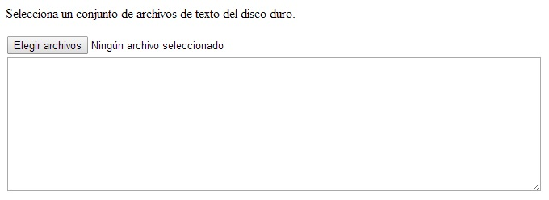
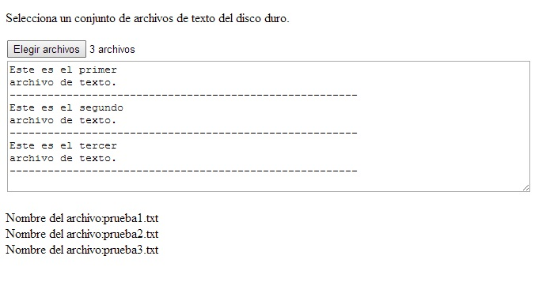

Hemos visto en el concepto anterior que HTML5 nos permite seleccionar un archivo de texto del disco duro local y seguidamente acceder a sus propiedades como el nombre, tamaño, tipo así como a su contenido.
Otra variante de este algoritmo es acceder a un conjunto de archivos en forma simultanea. Esto lo logramos cuando definimos un control file e indicamos la propiedad multiple:
<input type="file" id="archivo" multiple>
Esta propiedad no es necesario asignarle valor. Con esto cuando el operador presione el botón le permitirá seleccionar múltiples archivos.
Confeccionar un programa que nos permita seleccionar un conjunto de archivos de texto de una sola vez y muestre sus contenidos en un control textarea (separando el contenido de cada archivo por varios guiones). Mostrar además todos los nombres de archivos leidos.
<!DOCTYPE HTML>
<html>
<head>
<title>Prueba</title>
<script>
window.addEventListener('load', inicio, false);
function inicio() {
document.getElementById('archivo').addEventListener('change', cargar, false);
}
function cargar(ev) {
document.getElementById('datos').innerHTML='';
document.getElementById('editor').value='';
for(var f=0;f<ev.target.files.length;f++) {
document.getElementById('datos').innerHTML=document.getElementById('datos').innerHTML+
'Nombre del archivo:'+ev.target.files[f].name+'<br>';
var arch=new FileReader();
arch.addEventListener('load',leer,false);
arch.readAsText(ev.target.files[f]);
}
}
function leer(ev) {
document.getElementById('editor').value=document.getElementById('editor').value+ev.target.result+
'\n-------------------------------------------------------\n';
}
</script>
</head>
<body>
<p>Selecciona un conjunto de archivos de texto del disco duro.</p>
<input type="file" id="archivo" multiple><br>
<textarea rows="10" cols="80" id="editor"></textarea>
<br>
<p id="datos"></p>
</body>
</html>
En el bloque de HTML solo hemos dispuesto la propiedad multiple al control de tipo file (esto informa al navegador que está permitido la selección de más de un archivo):
<body> <p>Selecciona un conjunto de archivos de texto del disco duro.</p> <input type="file" id="archivo" multiple><br> <textarea rows="10" cols="80" id="editor"></textarea> <br> <p id="datos"></p> </body> </html>
La función cargar se ejecuta una vez que el usuario seleccionó los archivos del disco duro, lo primero que hacemos es borrar el contenido del párrafo y el textarea por si hay datos de selecciones anteriores:
function cargar(ev) {
document.getElementById('datos').innerHTML='';
document.getElementById('editor').value='';
Ahora viene lo distinto, como se pueden haber seleccionado más de un archivo debemos disponer una estructura repetitiva for. Para saber la cantidad de archivos seleccionados la propiedad files es un vector por lo que podemos acceder a length que almacena la cantidad de elementos del mismo:
for(var f=0;f<ev.target.files.length;f++) {
Dentro del for vamos concatenando en el párrafo el nombre de archivo que accedemos del vector según su subíndice ev.target.files[f].name:
document.getElementById('datos').innerHTML=document.getElementById('datos').innerHTML+
'Nombre del archivo:'+ev.target.files[f].name+'<br>';
Por otro lado creamos por cada archivo un objeto de la clase FileReader y le asociamos la función que se ejecutará cuando se termine de cargar el contenido del archivo en memoria:
var arch=new FileReader();
arch.addEventListener('load',leer,false);
arch.readAsText(ev.target.files[f]);
}
}
La función leer se ejecuta por cada uno de los archivos que se lee, aquí procedemos a acumular el contenido de cada archivo en el textarea y agregarles una serie de guiones de separación:
function leer(ev) {
document.getElementById('editor').value=document.getElementById('editor').value+ev.target.result+
'\n-------------------------------------------------------\n';
}
Inicialmente se muestra el botón para la selección de archivos y el textarea vacío:
Luego de seleccionar archivos de texto del disco duro podemos ver el contenido de los archivos y sus nombres:
